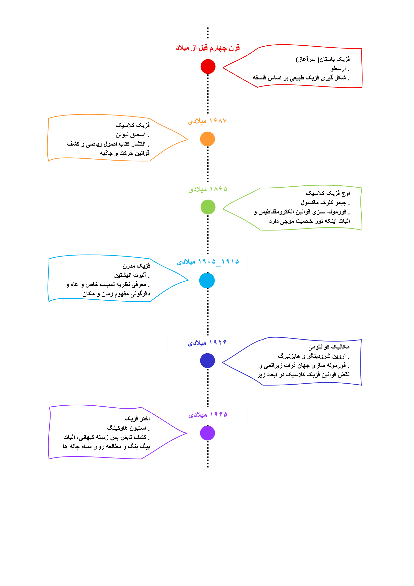

فزیک، بنیادیترین علم
تجربی است که به ما میآموزد جهان اطرافمان چگونه کار میکند.
این علم، از مطالعه کوچکترین ذرات تشکیلدهنده
ماده تا بزرگترین ساختارهای کیهانی را در بر میگیرد.
فزیک صرفاً مجموعهای از فرمولها نیست؛
بلکه ابزاری است برای پاسخ به بزرگترین پرسشهای بشر درباره ماهیت زمان، مکان، ماده و انرژی.

در قرن چهارم قبل از میلاد، فزیک هنوز از فلسفه جدا نشده بود.
دانشمندان باستان به رهبری ارسطو،
پدیدههای طبیعی را صرفاً
بر اساس مشاهدات شهودی و بدون فرمولهای ریاضی توجیه میکردند.
آنها جهان را متشکل از چهار عنصر اصلی (آب، باد، خاک و آتش) میدانستند.
این دوره آغاز فیزیک مدرن و آزمایشگاهی است.
نیوتن با انتشار کتاب شاهکار خود، سه قانون حرکت و قانون گرانش جهانی را فرمولهسازی کرد.
او ثابت کرد که حرکات زمینی و آسمانی (مانند گردش سیارات) همگی از قوانین ریاضی یکسانی پیروی
میکنند.
ماکسول بزرگترین یکپارچهسازی قرن نوزدهم را رقم زد.
او با ارائه معادلات معروف خود ثابت کرد که نیروهای الکتریسیته و مغناطیس در واقع دو روی یک سکه
هستند.
دستاورد بزرگ او، معرفی «نور» به عنوان یک موج الکترومغناطیسی بود.
با شروع قرن بیستم، فیزیک نیوتنی در سرعتهای بالا شکست خورد.
انیشتین با ارائه نظریه نسبیت خاص و عام، ثابت کرد که زمان و مکان مطلق نیستند.
او گرانش را نه یک نیرو، بلکه حاصل انحنای بافت فضا-زمان توسط جرم و انرژی معرفی کرد.
وقتی دانشمندان به بررسی ابعاد اتمی پرداختند، قوانین فیزیک کلاسیک کاملاً نقض شد.
شرودینگر و هایزنبرگ با فرمولهسازی مکانیک کوانتومی نشان دادند که در جهانِ ذرات زیراتمی،
قطعیت وجود ندارد و همهچیز بر اساس توابع احتمال و اصل عدم قطعیت رفتار میکند.
با کشف تابش پسزمینه کیهانی در این سال، نظریه بیگبنگ (انفجار بزرگ) به عنوان مدل استاندارد آغاز جهان
اثبات شد.
استیون هاوکینگ با ترکیب نسبیت عام و کوانتوم،
به مطالعه مرزهای کیهان و ساختار اسرارآمیز سیاهچالهها و افق رویداد آنها پرداخت.